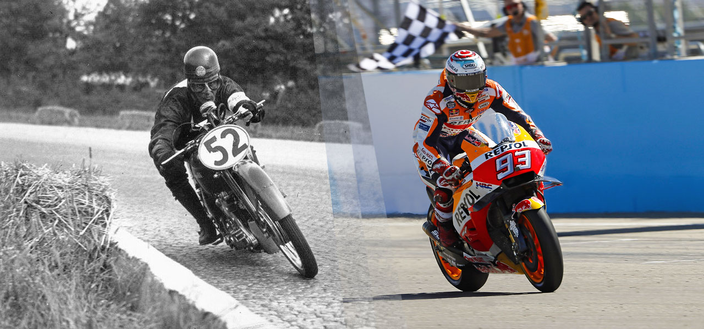

¿Qué es Moto GP?
MotoGP es la máxima categoría del Campeonato Mundial de Motociclismo, considerado el certamen internacional más importante en el ámbito de motociclismo de velocidad. u organización viene determinada por la Federación Internacional de Motociclismo (FIM), al igual que ocurre con las otras categorías del campeonato (Moto2 y Moto3).
Historia de Moto GP
La categoría reina del motociclismo, conocida como MotoGP, ha experimentado importantes cambios en su reglamentación y en la tecnología de las motos a lo largo de los años. Desde mediados de los 70 hasta 2002, se permitían motores de 500cc, ya fueran de dos o cuatro tiempos. Los motores de dos tiempos predominaban debido a su mayor potencia por cilindrada. Sin embargo, en 2002 se permitió el uso de motos de cuatro tiempos de hasta 990cc, lo que llevó a la rápida desaparición de los motores de dos tiempos en la competición. En 2007, la cilindrada máxima se redujo a 800cc, y en 2012 se incrementó nuevamente a 1000cc. Con este último cambio, se buscaba romper récords de velocidad que habían sido establecidos previamente. Dani Pedrosa había registrado 349,3 km/h en 2009, y Andrea Iannone superó esta marca en 2014 con 349,6 km/h, y nuevamente alcanzó los 354,9 km/h en 2016. Recientemente, el piloto Jorge Martín estableció un nuevo récord absoluto de velocidad en MotoGP al alcanzar los 363,6 km/h durante una carrera en Mugello, consolidándose así como el nuevo referente en velocidad punta en la categoría.
Reglas
- Licencias: Todos los pilotos deben tener una licencia válida emitida por la Federación Internacional de Motociclismo y cumplir con ciertos requisitos de experiencia.
- Motos: Solo se permiten motos que cumplan con las especificaciones técnicas establecidas por la FIM. Las motos de MotoGP son prototipos que no están disponibles para el público.
- Equipos: Cada equipo debe estar homologado y cumplir con las reglas de inscripción. Los equipos deben seguir los requisitos de construcción y mantenimiento de las motos.
- Rondas de clasificación: Las sesiones de clasificación determinan la posición de salida en la carrera. Las sesiones son cronometradas y se dividen en varias partes (Q1 y Q2).
- Carreras: Las carreras suelen tener una duración de entre 25 y 30 vueltas, dependiendo del circuito. Los pilotos deben completar el número mínimo de vueltas para ser clasificados.
- Puntuación:Los puntos se otorgan a los pilotos según su posición final en la carrera. El sistema de puntuación generalmente otorga puntos del primero al decimoquinto lugar.
- Reglas de conducta: Se espera que los pilotos mantengan un comportamiento deportivo y respeten a sus competidores. Las acciones antideportivas pueden resultar en penalizaciones.
- Motores y neumáticos: Hay regulaciones específicas sobre el tipo de motores y neumáticos que se pueden usar. Cada equipo tiene un número limitado de motores y neumáticos que puede utilizar durante la temporada.
- Revisiones técnicas: Las motos son sometidas a controles técnicos para asegurar que cumplen con las regulaciones de la FIM después de cada carrera y a lo largo de la temporada.
- Seguridad: Se deben seguir estrictamente las normas de seguridad, incluyendo el uso de equipo de protección y el cumplimiento de las regulaciones sobre el paddock y las zonas de pits.
- Sanciones: Las infracciones a las reglas pueden resultar en sanciones, que pueden incluir la pérdida de puntos, descalificación de la carrera o suspensiones.
Pilotos más destacados
| Nombre | Nacionalidad | Títulos Mundiales | Año de Debut | Equipo Actual |
|---|---|---|---|---|
| Valentino Rossi | Italiano | 9 | 1996 | Retirado |
| Giacomo Agostini | Italiano | 15 | 1961 | Retirado |
| Marc Márquez | Español | 8 | 2013 | Gresini Racing |
| Mika Kallio | Finlandés | 0 | 2004 | Retirado |
| Casey Stoner | Australiano | 2 | 2006 | Retirado |
| Jorge Lorenzo | Español | 3 | 2008 | Retirado |
| Andrea Dovizioso | Italiano | 0 | 2008 | Retirado |
| Kevin Schwantz | Americano | 1 | 1984 | Retirado |
| Mike Hailwood | Británico | 9 | 1958 | Retirado |
| Ruggero 'Ruggi' Pirovano | Italiano | 0 | 1951 | Retirado |